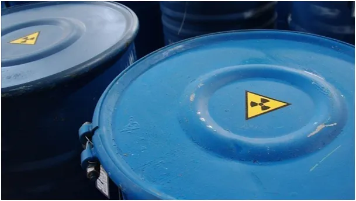

“Kto sieje wiatr, ten zbiera burzę.”
Pisałem kiedyś, "Dlaczego używa się zubożonego uranu w pociskach przeciwpancernych?"
Krótka odpowiedź jest taka, że uran jest bardzo ciężki i jak w coś taki pocisk uderzy to masakruje np. czołg bardziej niż pocisk z innego metalu. Dodatkowo zubożony uran to kłopotliwy odpad po produkcji paliwa do elektrowni jądrowych. Promieniowanie, jakie emituje jest szkodliwe. Produkcja z tego "śmierdzącego jaja" pocisków i sprzedaż ich do różnych bantustanów to specjalizacja "czołowych demokracji zachodu". W tym roku do Europy Wschodniej przywieziono tego typu amunicję. Nie wiem czy była użyta, w takich sytuacjach zostawia na wieki skażoną ziemię wokół pola walki.

Tymczasem Turcy w swej głównej gazecie piszą, że magazyny z tą bronią na Ukrainie zostały celnie zbombardowane. Jeśli to prawda, to skażenie lokalne w tym miejscu jest pewne, ale nie należy panikować i wyglądać na "świecące obłoki".
Nie należy tego traktować analogicznie jak eksplozja reaktora czy głowicy nuklearnej. Paradoksalnie to bilans zdarzenia jest dodatni, bo uległo skażeniu tylko miejsce składowania a nie tysiące hektarów, na których użyto by tej przeciwpancernej broni. Sienkiewicz to skwitowałby krótko: " Złapał Kozak Tatarzyna, a Tatarzyn za łeb trzyma".
https://www-aa-com-tr.translate.goog/en/russia-ukraine-war/russia-claims-it-destroyed-storages-of-depleted-uranium-shells-in-ukraine/2994727?_x_tr_sl=en&_x_tr_tl=pl&_x_tr_hl=pl&_x_tr_pto=sc
Paweł Klimczewski